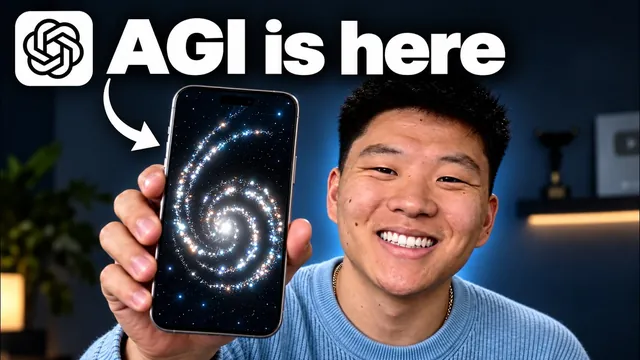

GPT-6 Astra 음성 모드로 진짜 뭐든 자동화된다

원본 영상 보기 →
- 음성 위임의 힘은 "동시성"에 있어요
- 맥락 지정이 결과 품질을 좌우합니다
- 되돌리기 어려운 세부 작업을 스킬로 표준화하세요
한 줄 요약
Nate Herk가 GPT-6 Astra 음성 모드로 여러 개의 Codex 작업 스레드를 말로 지시하고 조율합니다. 유튜브 영상을 X 아티클로 변환하고, 커리큘럼 랜딩 페이지를 만들고, 개인 OS에 회의 탭을 추가하는 과정을 실시간으로 보여 줘요.
전체 내용 정리
음성 모드는 Codex를 백엔드로 써요
핵심은 이 음성 모드가 백엔드에서 Codex를 그대로 사용한다는 점입니다.
그래서 Codex가 할 수 있는 일을 전부 하되, 그걸 목소리로 제어하고 여러 스레드를 동시에 띄울 수 있어요.
화면 아래 "start new voice chat" 버튼을 눌러 대화를 시작하면, 한 대화 안에서 지시하는 동안 별도 스레드들이 병렬로 돌아가는 것을 스레드 목록에서 확인할 수 있습니다.
Nate는 작업을 시작할 때마다 "내 Herc 2 프로젝트 안에서 작업해"라고 명시해요. 올바른 스킬과 맥락이 적용되도록요.
실제로 처음에는 맥락이 없는 일반 채팅 두 개가 잘못 열렸습니다. Herc 2 프로젝트를 지정하자 기존 작업을 중단시키고 올바른 컨텍스트로 다시 시작했어요.
유튜브 영상을 X 아티클로 변환했어요
첫 작업은 어제 올린 유튜브 영상을 X 아티클로 바꿔 X 계정에 올리는 것이었습니다. 동시에 별도 스레드가 썸네일을 만들도록 지시했고요.
결과물이 꼼꼼했어요.
- 전체가 서식이 잡혀 있었고, 유튜브 썸네일과 맞춘 5:2 비율 커버가 들어감
- 영상 전체를 분석해 11장의 스크린샷을 찍고, 각 이미지가 무엇을 보여주는지 이해해 본문의 알맞은 위치에 배치
- 전체 화면이 아닌 부분은 알아서 크롭
- 영상에 민감한 내용은 없었지만, API 키나 개인 이메일이 있었다면 자동으로 블러 처리하도록 스킬에 반영돼 있음
썸네일은 Nate가 이미 유튜브용으로 만들어 둔 것을 5:2로 바꾸기만 하면 됐는데요. 정확한 파일을 지정하지 않았는데도 유튜브에서 실제 게시된 썸네일을 찾아보고 로컬 파일까지 뒤져 작업했습니다.
그리고 아티클 스레드와 썸네일 스레드가 서로 대화해서, 아티클 작업이 승인된 커버와 진행 지시를 넘겨받았어요.
커리큘럼 랜딩 페이지를 브랜드 일관성 있게
두 번째 작업은 유료 커뮤니티의 강의가 개편된 것을 반영해, 신규 가입자가 모든 강의를 마쳤을 때의 변화를 보여 주는 커리큘럼 랜딩 페이지를 만드는 것이었습니다.
Nate는 ScrollCraft 스킬을 써서 레이어가 있고 시각적으로 동적이되 과하지 않게 만들라고 지시했어요.
결과 페이지는 그의 사진을 가져왔고, 배경의 산들이 서로 다른 위치에서 다른 속도로 움직이는 레이어를 넣었습니다. 실제 웹사이트를 크롤링해 파란 톤과 산 배경 같은 분위기, 인증 탭의 일관성까지 유지했고요.
특징은 이거예요. 작업을 줄 때 맥락을 스스로 파악하고 질문하고 워크스페이스를 먼저 뒤진 뒤, 요청을 사용자에게 더 구체적으로 맞춥니다.
개인 OS에 회의 탭을 추가했어요
Nate가 "Upit OS"라고 부르는 개인 운영체제는 목소리만으로 구축한 것으로, 캘린더·Slack·ClickUp·이메일을 한 인터페이스에 연결합니다.
캘린더는 실제로 작동해서, 이 화면에서 이벤트를 추가하면 진짜 구글 캘린더에 반영돼요. Slack·ClickUp·이메일로 팀과 소통하고 새 스레드를 시작할 수 있으며, 유튜브와 커뮤니티에서 온 질문, X와 유튜브의 업계 반응도 모여 있습니다.
세 번째 작업으로 왼쪽에 회의 탭을 추가해 달라고 했어요. Fireflies에서 회의를 가져와 날짜와 한 문장 요약, 중요한 액션 아이템을 시각적으로 보여 주고 다가오는 중요한 회의도 표시하는 겁니다.
완성된 회의 섹션에는 내일과 월요일 회의가 캘린더에 뜨고, 지난 회의를 열면 요약과 액션 하이라이트가 나와요. 녹화본을 열면 Fireflies로 바로 연결되고요.
참고로 Fireflies가 이미 액션 아이템을 처리하기 때문에 배경에서 AI를 거의 쓰지 않는 조합일 수 있습니다.
브라우저 사용과 대용량 영상 요약
브라우저 사용 능력의 예로, 사진 두 장을 주고 Canva에서 자신을 그리게 했습니다. 시간은 꽤 걸렸지만 비전과 브라우저 조작 양쪽에서 인상적이었어요.
더 놀라운 건 이겁니다. 7월에 열린 AIS Live 행사의 150GB가 넘는 영상에서 60초짜리 하이라이트 영상을 만들라고 Codex에 링크만 주고 지시했더니, 단 두 번의 프롬프트로 스토리가 있는 리캡 영상이 나왔어요.
휴대폰에서도 같은 방식으로 돼요
휴대폰에서도 remote 메뉴에서 새 음성 채팅을 시작할 수 있습니다.
Nate는 걷거나 운전하면서 작업을 위임하는 상황을 상정해, 폰에서 "Herc 2 프로젝트 안에서 X에 올라온 Astra 6의 가장 좋은 바이럴 데모를 정리해 줘"라는 스레드를 띄웠어요.
스크롤을 계속하는 동안에도 대화가 유지됐고, 데스크톱과 폰 사이 동기화가 깨끗했습니다. 이 리서치 스레드는 X를 검색해 여러 사람의 게시물을 링크와 함께 찾아냈고, 그중 조회수 130만인 3D 그래픽 빌드 사례가 포함됐어요.
유튜브 트렌드 분석
Nate가 자신의 과거 영상과 업계 상황을 보고 트렌드를 분석해 달라고 하자, 2027년을 향한 큰 흐름 네 가지를 제시했습니다.
- AI 보조 제작과 개인화의 확대
- 멤버십과 자기 소유 오디언스를 중심으로 한 커뮤니티의 심화
- 숏폼과 롱폼이 하나의 퍼널로 융합
- 일회성 업로드가 아니라 알아볼 수 있는 쇼와 관점을 구축하는 크리에이터가 보상받는 것
핵심 인사이트
- 음성 위임의 힘은 "동시성"에 있어요: 한 스레드에서 대화하는 동안 다른 스레드들이 병렬로 작업하고 서로 결과를 주고받습니다. 걷거나 운전하며 폰에서 여러 작업을 던져 놓고 나중에 확인하는 방식이라, 일을 "하는" 게 아니라 "위임하는" 도구예요.
- 맥락 지정이 결과 품질을 좌우합니다: "내 프로젝트 안에서 작업해"라고 명시하지 않으면 맥락 없는 일반 채팅이 열려요. 프로젝트와 스킬을 지정하면 워크스페이스를 크롤링해 브랜드 톤, 커리큘럼 구조, 기존 썸네일까지 스스로 찾아 맞춥니다.
- 되돌리기 어려운 세부 작업을 스킬로 표준화하세요: 스크린샷을 알맞은 위치에 배치하고, 필요한 곳만 크롭하고, API 키와 이메일을 블러 처리하는 게 전부 스킬에 반영돼 매번 반복돼요. 한 번 다듬은 작업 규칙이 재사용 가능한 자산이 됩니다.
오늘 당장 해볼 것
- 반복하는 콘텐츠 변환 작업 하나를 골라, 원하는 출력 형식과 이미지 처리 규칙(어디를 크롭할지, 무엇을 가릴지)을 한 문서로 적어 "스킬"처럼 저장하고 그걸 참조하도록 지시해 보세요.
- 작업을 지시할 때 항상 "○○ 프로젝트 폴더 안에서, ○○ 자료를 참고해서"를 문장 맨 앞에 붙이는 습관을 들이세요. 맥락 없는 결과가 나오는 걸 방지합니다.
- 회의 도구와 캘린더를 쓰고 있다면, 지난 회의의 한 줄 요약과 액션 아이템을 한 화면에 모아 보여 주는 간단한 페이지를 만들어 달라고 요청해 보세요. 회의 후속 조치를 놓치지 않는 뷰가 생깁니다.